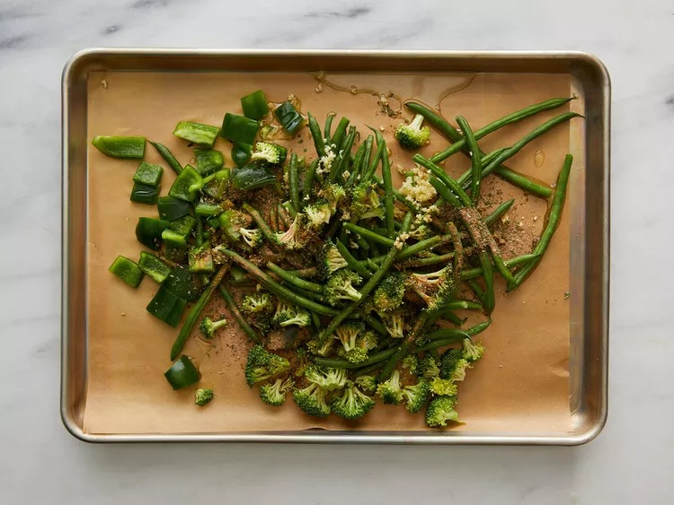

This extra-crispy sheet pan chicken and veggies dinner is baked on one pan and packed with flavor!
Ingredients
1 tablespoon dried oregano
1 tablespoon dried parsley
1 teaspoon paprika
½ teaspoon garlic powder
¼ teaspoon seasoned salt, or to taste
¼ teaspoon ground black pepper, or to taste
½ pound fresh green beans, trimmed
1 small red potato, diced
1 sweet bell pepper, chopped
1 cup broccoli florets, chopped
1 tablespoon minced garlic
3 tablespoons olive oil
⅓ cup all-purpose flour
4 tablespoons but hter, melted
1 cup panko bread crumbs
1 cup freshly grated Parmesan cheese, divided
1 ½ pounds skinless, boneless chicken breasts, pounded flat and excess fat removed
Dipping Sauce (Optional):
1/2 cup mayonnaise (Optional)
1/4 cup ketchup (Optional)
1/2 tsp garlic powder (Optional)
1/4 tsp Worcestershire sauce (Optional)
STEP/DIRECTIONS TO TAKE IN MAKING SHEET PAN PARMASAN CHICKEN AND VEGGIES
STEP 1
Preheat the oven to 400 degrees F (200 degrees C). Line a sheet pan with parchment paper.
STEP 2
Combine oregano, parsley, paprika, garlic powder, seasoned salt, and pepper in a small bowl.
STEP 3
Place green beans, potato, bell pepper, broccoli, and garlic onto the prepared sheet pan. Drizzle with olive oil and sprinkle with 1/2 of the seasoning mix; toss to coat.

STEP 4
Place flour into a bowl. Place melted butter into a second bowl. Mix panko, 2/3 cup Parmesan cheese, and the remaining seasoning mix together in a third bowl.
STEP 5
Slice chicken into 1 1/4-inch strips, then coat in flour. Dredge floured strips in melted butter, dripping excess butter back into the bowl. Press into Parmesan-panko mixture until heavily coated on both sides.
STEP 6
Push veggies to one half of the sheet pan. Place coated chicken strips onto the other side. Sprinkle any remaining Parmesan-panko mixture over chicken, pressing to adhere.
STEP 7
Bake in the preheated oven for 10 minutes. Flip chicken strips and stir veggies, then continue to bake until chicken juices run clear and veggies are crisp-tender, 10 to 15 more minutes. An instant-read thermometer inserted into the center of the chicken should read at least 165 degrees F (74 degrees C).
STEP 8
Meanwhile, make the dipping sauce: Whisk mayonnaise, ketchup, garlic powder, and Worcestershire sauce together in a small bowl
STEP 9
Remove chicken and veggies from the oven. Toss veggies with remaining 1/3 cup Parmesan cheese. Serve with dipping sauce.